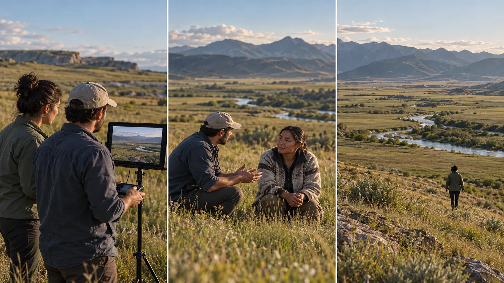

G25 · 고급 · 일반 드론
WOLAKOTA: 공동 작업자의 시선을 카메라에 담기
촬영자의 익숙한 구도와 공동 작업자의 시선을 구별해 편집에 반영하는 법을 배운다.
그림에서 확인할 세 가지항공 촬영에서도 누구의 시선인지 묻는다.
1함께 보는 화면
왼쪽 두 사람은 같은 모니터를 보며 계곡을 바라본다. 촬영 장비의 소유보다 화면을 함께 보고 의견을 나누는 관계에 주목한다.
2말하는 사람과 듣는 사람
가운데 남성의 손짓과 여성이 향한 시선을 함께 본다. 풍경 안의 사람이 단순한 크기 기준이 아니라 이야기를 주고받는 주체로 놓였다.
3풍경 안에 남은 인물
오른쪽은 여성의 뒷모습을 계곡과 함께 보여준다. 인물을 작게 배치했어도 시선이 향하는 방향이 풍경을 읽는 출발점이 되는지 살핀다.
촬영 설계
촬영을 이렇게 설계한다
시선의 주인을 나눈다
제작자는 자신이 기체를 조종하고 Ike Miller가 카메라를 맡았다고 설명한다. 짧은 훈련 뒤 나온 독특한 프레이밍을 익숙한 촬영 관습과 다른 자산으로 받아들였다.
편집의 부족한 관계를 찾는다
처음 만든 흑백 편집에는 감정적으로 빠진 부분이 있었다고 회고한다. 교육 적용에서는 아름다운 풍경을 더 넣기 전에 인터뷰의 말과 풍경이 연결되는 이유를 점검한다.
색과 목소리를 함께 검토한다
제작자는 이후 색채 이미지와 편집 협업이 작품을 바꿨다고 설명한다. 교육 적용에서는 흑백을 유지할 때 얻는 통일감과 잃는 의미를 각각 비교해 한 가지 룩을 선택한다.
WOLAKOTA 제작자가 공동체와 협업하고 장기간 편집 방향을 찾은 제작 과정이다.
원본 영상WOLAKOTA: 공동 작업자의 시선을 카메라에 담기
1. 목소리와 풍경
원본에서 인터뷰의 말이 이어지는 동안 어떤 풍경이 배치되는지 찾아본다. 말의 의미를 넓히는지 분위기만 보태는지 구별한다.
2. 카메라의 관점
사람과 땅을 어느 거리에서 바라보는지 관찰한다. 익숙한 관광 구도와 다른 배치가 발견되면 그 의미를 토론한다.
3. 색의 역할
색채나 흑백이 바뀌는 구간이 있는지 살펴본다. 색의 변화가 이야기의 감정과 연결되는 근거를 영상에서 찾는다.
재생이 제한되면 원본 영상 새 창을 이용하세요.
제작진 설명 · 한국어 요약 번역
제작 설명 · 장비와 역할
장비
번역 요약: Tim Sessler는 2015년 Pine Ridge 촬영에 개조 RED Dragon 6K를 썼다고 적는다.
기체는 Freefly ALTA 6, 짐벌은 MoVI M15였다.
소규모 현장
촬영은 일부러 최소 규모로 했고 그는 MoVI로 직접 초점을 당겼다.
역할
드론 촬영은 Sessler가 조종하고 Ike Miller가 교육 뒤 카메라를 조작했다.
제작진 설명 · 한국어 요약 번역
제작 설명 · 흑백 편집과 적외선 뉴욕
흑백 편집
번역 요약: 12분짜리 흑백 편집본이 미완성처럼 느껴져 억지로 공개하지 않았다.
적외선 룩
2018년 가을 뉴욕을 적외선 느낌으로 촬영해 빠진 감정을 채웠다.
RED Monstro 8K와 Wratten IR 필터를 썼고 후반에서 파랑과 빨강 채널을 맞바꿨다.
컬러 전환
Brandon Bray의 제안으로 흑백에서 컬러로 바뀌었다.
뉴욕 항공 장면은 헬리콥터 팀이 맡아 모두 드론 촬영으로 묶을 수 없다.
Kling 프롬프트단문 인과 체인 · 16:9
내가 직접 만들어 본다
사람의 시선과 손짓이 원인이 되어 카메라가 같은 방향으로 움직이고 풍경이 열리는 순서를 지시한다.
- S01넓은 계곡 한가운데 작은 사람이 서 있다.
- S02영상은 하나의 연속 쇼트다.
- S03화면에 드론 기체는 나오지 않는다.
- S04사람이 계곡의 먼 한쪽을 바라본다.
- S05처음 10초 동안 카메라는 사람을 작게 두고 가만히 지켜본다.
- S06사람의 시선이 향하기 때문에 카메라가 같은 쪽으로 천천히 돌아간다.
- S07카메라가 돌아가자 사람이 보던 곳이 화면에 들어온다.
- S08다음 10초 동안 사람이 손을 들어 먼 곳을 가리킨다.
- S09손짓이 향하자 카메라도 가리킨 쪽으로 더 나아간다.
- S10화면이 나아가자 가려진 계곡의 안쪽이 열린다.
- S11마지막 10초 동안 사람은 화면 가장자리에 작게 남는다.
- S12카메라는 사람의 시선을 따라 풍경을 읽는다.
- S13그 결과 풍경은 사람이 바라본 이야기의 확장이 된다.
[네거티브]
- 사람이 크게 보이거나 풍경이 평평한 것 금지
- 컷이 바뀌어 다른 사람이나 장소가 나오는 것 금지
- 화면에 드론 기체가 나타나는 것 금지
- 사람이 카메라를 쳐다보거나 시선이 흐려지는 것 금지
- 카메라가 사람 위로 접근해 사람이 커지는 것 금지
- 시선과 반대 방향으로 카메라가 도는 것 금지
- 사람이 보던 곳이 화면 밖에 머무는 것 금지
- 사람이 가리키는 방향이 드론 쪽으로 향하는 것 금지
- 카메라가 가리킨 곳과 다른 방향으로 나아가는 것 금지
- 계곡 안쪽이 열리지 않고 같은 풍경이 반복되는 것 금지
- 사람이 화면 밖으로 사라지거나 가운데서 커지는 것 금지
- 카메라가 시선과 무관한 화려한 경로를 그리는 것 금지
- 풍경만 아름답고 사람과 이야기가 끊어지는 것 금지
결과에서 볼 것
- 카메라가 사람의 시선 방향으로 돌아갔는가
- 손짓이 가리킨 쪽으로 카메라가 나아갔는가
- 사람이 끝까지 작게 풍경 안에 남았는가